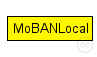
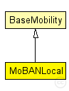

This documentation is released under the Creative Commons license
This documentation is released under the Creative Commons license(no description)
The following diagram shows usage relationships between types. Unresolved types are missing from the diagram. Click here to see the full picture.
The following diagram shows inheritance relationships for this type. Unresolved types are missing from the diagram. Click here to see the full picture.
| BaseMobility (simple module) |
Module which is responsible for mobility related information like position and movement BaseMobility itself defines a static mobility pattern (means only a position, no movement). Mobility modules which extend from this module will define more complex movement patterns. |
| Name | Type | Default value | Description |
|---|---|---|---|
| notAffectedByHostState | bool | true | |
| coreDebug | bool |
debug switch for the core framework |
|
| x | double |
x coordinate of the nodes' position (-1 = random) |
|
| y | double |
y coordinate of the nodes' position (-1 = random) |
|
| z | double |
z coordinate of the nodes' position (-1 = random) |
|
| debug | bool |
debug switch |
|
| updateInterval | double |
Time interval to update the hosts position (seconds) |
|
| coordinatorIndex | int |
The index of the belonging coordinator module |
| Name | Value | Description |
|---|---|---|
| display | i=block/cogwheel | |
| class | MoBANLocal |
simple MoBANLocal extends BaseMobility { parameters: @class(MoBANLocal); bool debug; // debug switch double updateInterval @unit(s); // Time interval to update the hosts position (seconds) int coordinatorIndex; // The index of the belonging coordinator module }
This documentation is released under the Creative Commons license